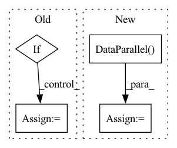

Pattern ID :39764
Before Change
def main():
if torch.cuda.is_available():
device = torch.device("cuda")
else:
device = torch.device("cpu")
After Change
// send model to device
model = model.to(device)
if len(device_ids) > 1:
model = torch.nn.DataParallel( model, device_ids=device_ids)
// create dataloader
data_loader = eval("{}DataLoader".format(config.dataset))(
data_dir=config.data_dir,In pattern: SUPERPATTERN
Frequency: 3
Non-data size: 4
Instances Fragment ID: 113223951
Project Name: asyml/vision-transformer-pytorch
Commit Name: 47389698af0c1a8faf273479b5dc20585411c08a
Time: 2020-11-15
Author: haoc3@andrew.cmu.edu
File Name: src/eval.py
M Class Name: AnonimousClass
N Class Name: AnonimousClass
M Method Name: main(0)
N Method Name: main(0)
M Parent Class:
N Parent Class:
M File Name: src/eval.py
N File Name: src/eval.py
M Start Line: 13
M End Line: 39
N Start Line: 13
N End Line: 42
Before Change
y = np.expand_dims(y.transpose(2, 0, 1), 0)
y = Variable(torch.Tensor(y))
if opt.use_GPU:
y = y.cuda()
with torch.no_grad(): //
if opt.use_GPU:After Change
model = SAPNet(recurrent_iter=opt.recurrent_iter, use_ghost=opt.use_ghost).to(device)
print_network(model)
model = model.to(device)
model = nn.DataParallel( model, device_ids=device_ids)
model.load_state_dict(torch.load(os.path.join(opt.save_path, "net_latest.pth"), map_location=device))
model.eval()
time_test = 0 Fragment ID: 113223948
Project Name: shenzheng2000/sapnet-for-image-deraining
Commit Name: 81b8692e1300c15fe0cc8b0d72a5382effe5d4b5
Time: 2021-08-24
Author: 69662345+ShenZheng2000@users.noreply.github.com
File Name: test.py
M Class Name: AnonimousClass
N Class Name: AnonimousClass
M Method Name: test(0)
N Method Name: test(0)
M Parent Class:
N Parent Class:
M File Name: test.py
N File Name: test.py
M Start Line: 9
M End Line: 70
N Start Line: 11
N End Line: 64
Before Change
def train():
if torch.cuda.is_available():
os.environ["CUDA_VISIBLE_DEVICES"] = opt.gpu_id
device = torch.device("cuda" if torch.cuda.is_available() else "cpu")
After Change
// Build deraining model
model = SAPNet(recurrent_iter=opt.recurrent_iter, use_ghost=opt.use_ghost).to(device)
model = nn.DataParallel( model, device_ids=device_ids)
print_network(model)
// Define SSIM and constrative loss
Fragment ID: 113223947
Project Name: shenzheng2000/sapnet-for-image-deraining
Commit Name: e4c93815cbba1ca68937401c8f5baed9b8ecaf18
Time: 2021-08-24
Author: 69662345+ShenZheng2000@users.noreply.github.com
File Name: train.py
M Class Name: AnonimousClass
N Class Name: AnonimousClass
M Method Name: train(0)
N Method Name: train(0)
M Parent Class:
N Parent Class:
M File Name: train.py
N File Name: train.py
M Start Line: 42
M End Line: 150
N Start Line: 37
N End Line: 165